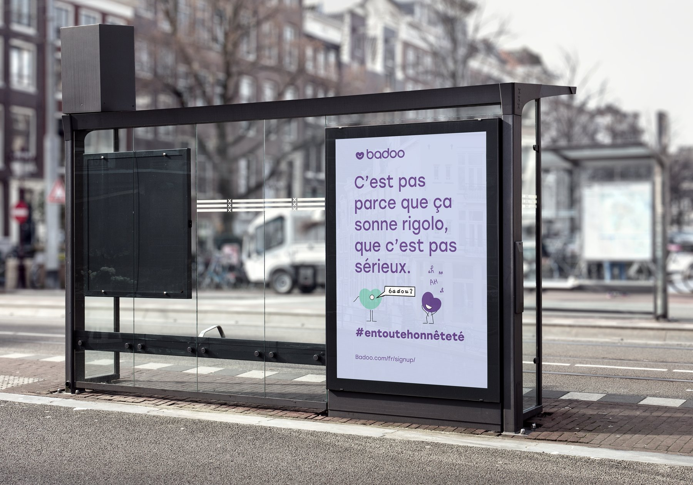
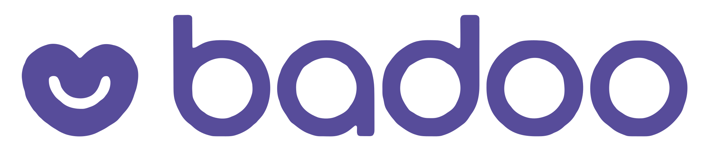
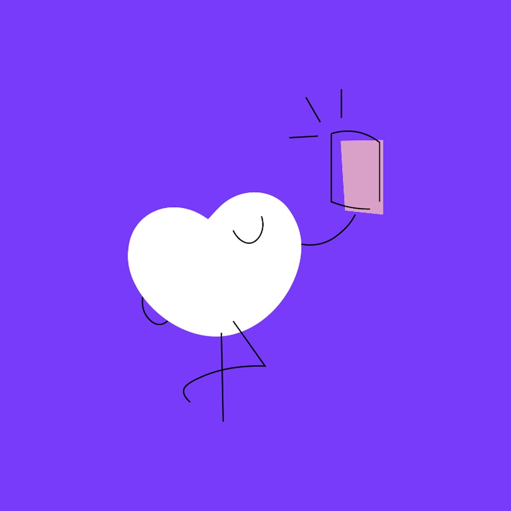
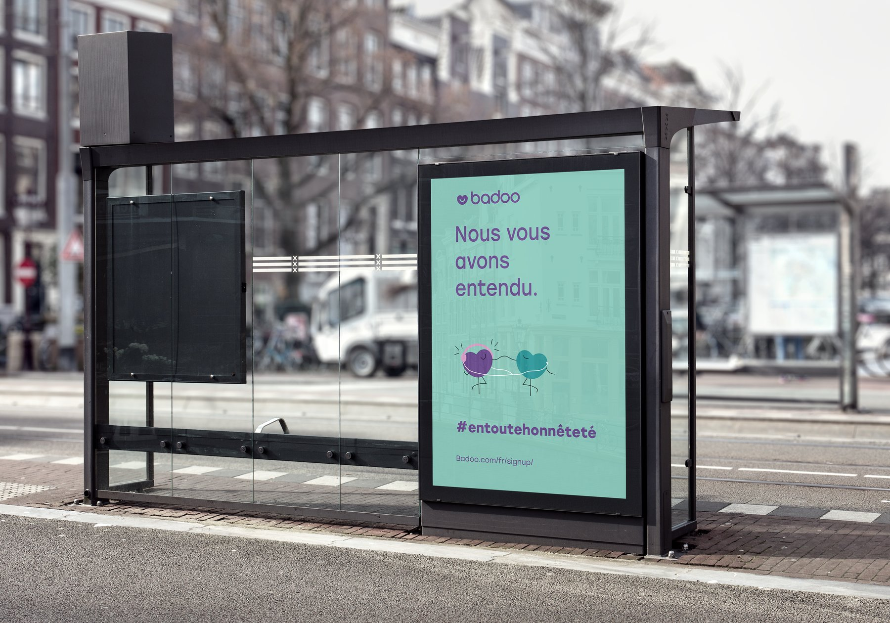
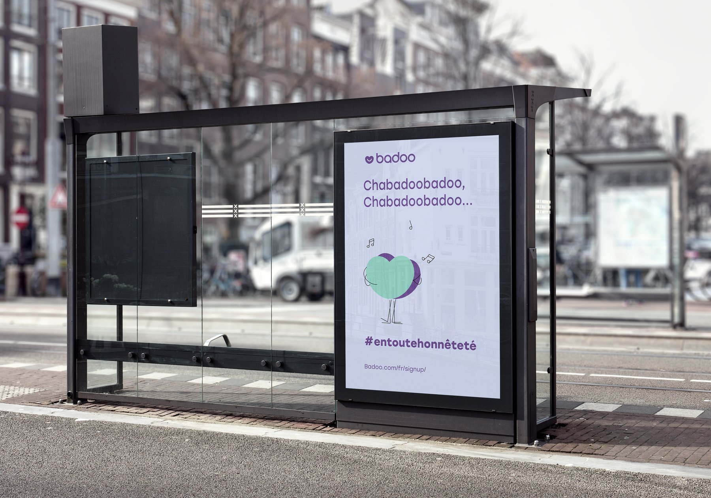
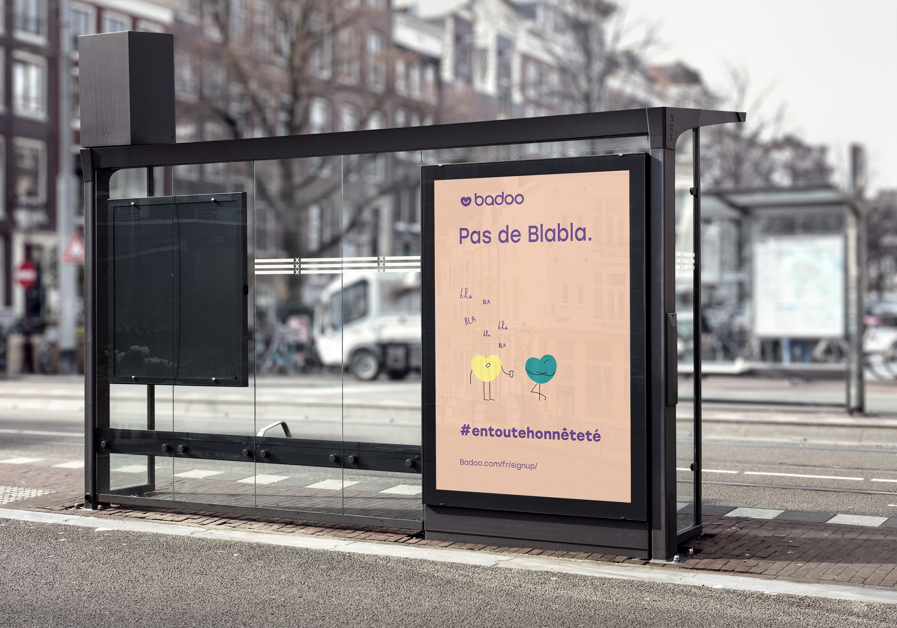

Branding case study
Badoo, en toute honnêteté
A rebrand pitch that moves Badoo away from its image as a hookup app and towards real connection, starting with an audience most dating apps ignore: young people in rural France.
- Client
- Pitch to Badoo
- Year
- 2020
- Role
- Designer & illustrator
- Tools
- Adobe Illustrator

The brief
My client was preparing a marketing pitch for Badoo, so the visuals came paired with a strategy and concept proposal. Badoo wanted to shed its reputation as a hookup app and stand alongside dating apps like Bumble, Hinge and Meetic.
Most dating apps are built around big-city life. Together we wrote a brief focused on young people in rural France, whose experience of online dating is very different. The goal was a warmer, more honest platform that fits their values and lifestyles, summed up in one line: #entoutehonnêteté, “in all honesty”.
01
A softer identity
Colour & type
The palette pairs Badoo's purple with soft mint, peach, butter yellow and lilac. It feels playful without tipping into overtly feminine, so it speaks to as wide an audience as possible.


02
Hearts with personality
From icon to character
The heart is already Badoo's best-known symbol. I brought it to life: each heart got arms, legs and a personality of its own, a bit like the M&M's characters.
The hearts can show the whole range of dating feelings, from a first spark of interest to a real connection. That adds warmth and humour, and gives users characters they can see themselves in.

03
The campaign
Made for smaller towns
The campaign was designed for rural settings. Bus shelters are part of everyday life in smaller towns and villages, so that's where the posters live. They meet people where they are and invite them to give dating apps like Badoo a try.
Each poster pairs a short, honest line with a little scene starring the hearts: shrugging off the jokes about the name, listening, singing, or cutting through the small talk.



Process
I created every asset and illustration in Adobe Illustrator. The final files went to the client as SVGs inside PowerPoint, ready to drop straight into their pitch.
Takeaway
The rebrand gives Badoo a warm, emotionally resonant identity. By designing for an overlooked audience instead of the usual city crowd, it turns inclusivity into a real point of difference, and positions Badoo as a dating app built on genuine connection.